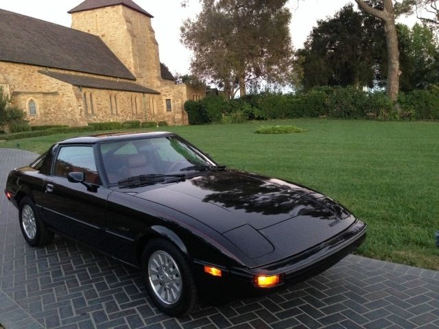

DADO
The Mazda RX-7 is a sports car produced from 1978 to 2002. It is known for its rotary engine and unique design.
FB (1978-1985)

The first generation RX-7, also known as the "SA22C," features a 12A rotary engine and distinctive pop-up headlights.
FC (1985-1991)

The second generation RX-7, the "FC," offers updated styling and a more powerful 13B rotary engine, with a turbocharged option available.
FD (1992-2002)

The third and final generation RX-7, the "FD," is revered for its timeless design and twin-turbocharged 13B-REW rotary engine.
MX-5 Miata
The Mazda MX-5 Miata is a lightweight, two-seat roadster produced since 1989. It is known for its fun-to-drive nature and affordability.
NA (1989-1997)

The first generation MX-5, the "NA," features a 1.6L or 1.8L inline-4 engine, pop-up headlights, and classic roadster styling.
NB
(1998-2005)

The second generation MX-5, the "NB," offers updated styling and a more refined driving experience while retaining the spirit of the original.
323/Protegé
The Mazda 323, also known as the Protegé in North America, is a compact car produced from 1977 to 2003.
BG (1989-1994)

The fourth generation 323/Protegé, the "BG," features a range of engines, including a turbocharged GTX and GTR version with AWD.
BH (1994-1998)

The fifth generation 323/Protegé, the "BH," offers updated styling and engine options, including a 2.0L FS-DE in the Protegé ES model.
BJ (1998-2003)

The sixth and final generation 323/Protegé, the "BJ," is known for its spacious interior and the performance-oriented Protegé MP3 and Mazdaspeed versions.